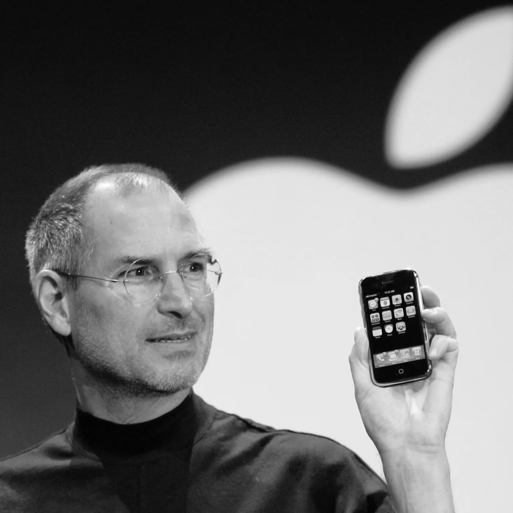
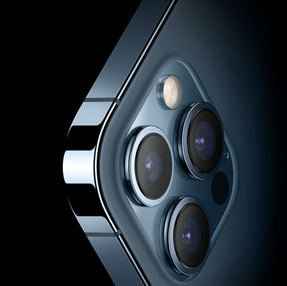
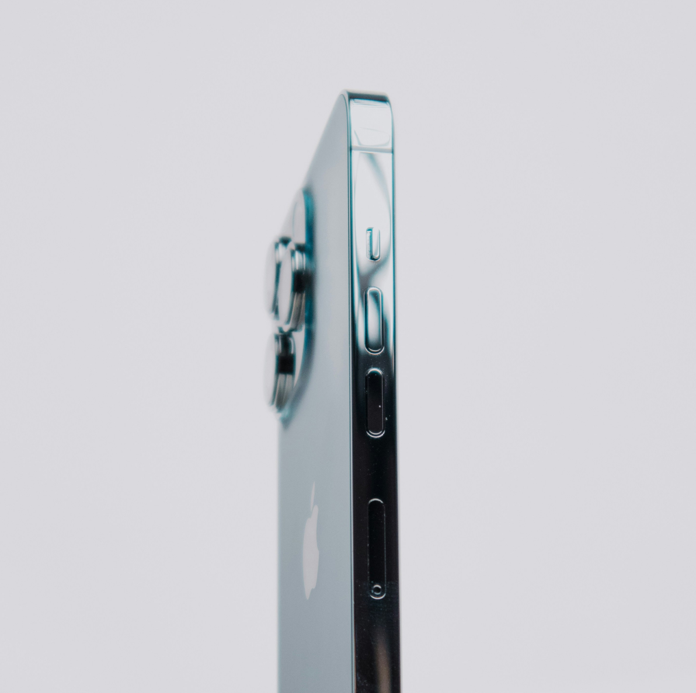

ABOUT
OUR STORY
- Think Different.
- “Apple's about something more than that.
Apple, at the core, its core value, is we believe that people with passion can change the world for the better.”
- Steve Jobs

EVOLUTION AT APPLE.
Apple's journey is a testament to innovation, design excellence, and relentless pursuit of excellence. Since its founding in 1976 by Steve Jobs, Steve Wozniak, and Ronald Wayne, Apple has continuously redefined the boundaries of technology and user experience.
-
1976
-
Apple, founded in 1976, aimed to empower people with groundbreaking, user-friendly technology, laying the foundation for innovation through forward-thinking designs.
-
Steve Jobs with the Macintosh
-
- Innovation and Design at Its Core
- A Symbol of Simplicity, Elegance, and Revolution.
- Apple Inc., a pioneer in technology and design, has consistently pushed the boundaries of innovation. Known for transforming industries, Apple stands as a symbol of innovation and creativity. The company's philosophy centers on blending cutting-edge technology with user-friendly design, making its products not just tools but experiences.
- Design Philosophy
- Apple's design philosophy is rooted in minimalism. The clean, uncluttered aesthetics reflect the belief that "design is not just what it looks like and feels like. Design is how it works." Every detail, from the curved edges of the MacBook to the haptic feedback of the Apple Watch, is meticulously crafted to enhance functionality while maintaining elegance.
- Key Innovations
- Apple's journey is marked by groundbreaking technologies. The App Store reimagined software distribution, while Face ID and Touch ID revolutionized personal security. The M1 and M2 chips showcase Apple's leadership in performance and efficiency. Products like the iPad, AirPods, and Apple Vision Pro demonstrate the company's dedication to shaping the future.
- Why Apple Stands Out
- Apple's relentless pursuit of excellence and its ability to anticipate user needs set it apart. By prioritizing quality, creativity, and a seamless user experience, the brand has cultivated unparalleled loyalty. Apple isn't just about products; it's about reshaping the way we live and interact with the world.
- A Legacy of Change
- Each new product launch feels like a milestone, inspiring millions around the globe to think differently and embrace innovation. Apple's journey is not just about adapting to the future—it's about defining it. Through groundbreaking technology, meticulous design, and an unwavering focus on user experience, Apple has consistently reimagined what's possible.
-
Macintosh LC II

-
First iPhone
 -
First Apple Watch
-
In the 2000s, Apple shifted its focus to innovation and seamless device integration, launching iconic products like the iPod and iPhone, transforming into a global leader in consumer technology.
-
2000s
-
iPad Pro
 -

-
Apple Vision Pro
-
2025
Beyond -
In 2025 and beyond, Apple aims to drive innovation through AR, AI, and wearables, achieve full carbon neutrality, enhance accessibility, and lead responsibly with a focus on privacy and security.
-
Welcome to Apple.